Zenit Software Manual
A publication by Donatoni Macchine S.r.l.
Software Version: 1.26
Manual Version: 1.0
Single-head polishing machine · Section B · Original instructions
Date:
1.1 General information
The information contained in this document applies only to the software versions indicated on the title page.
Not all the functions available in the product may be described in this documentation; in such cases, Donatoni Macchine is under no obligation to guarantee these functions or retain them in future versions.
This document is supplied as the “Section B” software supplement to the machine's use and maintenance manual.
1.2 Purpose of the manual
This manual contains the operating instructions required for a thorough understanding of the Zenit program, as well as useful information for troubleshooting.
Compliance with the instructions in this manual is essential for the correct operation, service life and cost-effective use of the machine.
The machine's use and maintenance manual and this software manual must always be kept at the plant installation site, in a safe and easily accessible place. If either manual is lost, contact the health and safety manager.
Failure to comply with the instructions in this manual, negligence, or improper and unsuitable use of the machine may cause the Manufacturer to void the machine warranty and may prevent the machine from delivering the benefits for which it was designed.
DONATONI MACCHINE SRL is available to provide prompt and accurate technical assistance and any other support required to ensure optimal machine operation and maximum performance.
The Manufacturer reserves the right to modify this publication and the data contained herein at its discretion whenever deemed necessary for the technical or commercial improvement of the product.
1.3 Keeping the manual
This Software Manual must be kept throughout the machine's entire service life, including if the machine is transferred to a third party.
To keep the Software Manual in good condition, the following is recommended:
use the Manual in a way that does not damage all or part of its contents; in particular, do not leave the Manual unattended during use and return it to its designated location immediately after consultation;
do not remove, tear or rewrite any part of the Manual for any reason;
keep the Manual in an area protected from moisture, heat and other environmental factors that could affect its integrity or service life;
if all or part of this Manual is lost or damaged, request a copy of the documentation from the Manufacturer.
1.4 Responsibility
Donatoni Macchine S.r.l. is responsible for this document.
1.5 Graphical safety conventions
Text and descriptions of particular importance to personnel safety and correct use of the product, including incorrect practices to be avoided and the associated obligations and prohibitions, are highlighted in BOLD CAPITAL LETTERS.
The following symbols are used in the instruction manual:
DANGER | |
WARNING | |
 | CAUTION |
1.6 Glossary
CSV | Comma Separated Values |
DXF | Drawing Exchange Format |
1.7 Intended users of the manual
This document contains information intended for:
Machine operator
Authorised service technician
1.8 Structure of the manual contents
The document is divided into chapters describing:
Basic operations and machine description
Programming logic
Software pages
Interlocks and rules for correct use of the device
Title page and document data
Original title page data
SECTION B
Software manual
Rev. 0.0
ZENIT
Single-head polishing machine
SW Vers. 1.26
ORIGINAL INSTRUCTIONS
CUSTOMER IDENTIFICATION DATA | |
|---|---|
MODEL | |
SERIAL NUMBER | |
YEAR OF MANUFACTURE |
SOFTWARE MANUAL
A publication by Donatoni Macchine S.r.l.
Document: MN_SW_Zenit_sw1.26_rd0.0_it
Date: 30/04/2020
Every effort has been made to ensure that the information contained in this manual is accurate and complete. Any errors, omissions and/or suggested improvements may be reported to the following address:
DONATONI MACCHINE S.r.l
Via Napoleone, 14
37015 PONTON – DOMEGLIARA
VERONA (ITALY)
Sales Department Tel. 045 68 62 548 Fax 045 68 84 347 | Technical Department Tel. 045 68 88 604 | Service Department Tel. 045 68 62 899 |
|---|
Email address: info@donatonimacchine.eu
© Donatoni Macchine S.r.l. – April 2020
All rights reserved.
Reproduction in whole or in part is prohibited without the written consent of the copyright owner.
Revision history
Rev. Doc. | Vers. SW | Description | Approved | Date | Page |
|---|---|---|---|---|---|
-- | 1.26 | First issue | N. Chesini | -- | All |
Issuing Department Code: Software Department | Prepared by | Checked by | Pages |
File: MN_SW_Zenit_sw1.26_rd0.0_it | N. Chesini | N. Chesini | 48 |
1.9 Technical assistance information
If assistance or clarification is required, the customer may contact the technical sales support provided by local agents or importers, who are always in direct contact with the manufacturer.
In most cases, many technical problems can be resolved through minor adjustments; therefore, we recommend reading this manual carefully before contacting the Service Department.
DONATONI MACCHINE S.r.l
Via Napoleone, 14
37015 – DOMEGLIARA
VERONA (ITALY)
Sales Department Tel. 045 68 62 548 Fax 045 68 84 347 | Technical Department Tel. 045 68 88 604 | Service Department Tel. 045 68 62 899 |
|---|
Email addresses: service@donatonimacchine.eu
For faults or malfunctions that cannot be resolved, the user may contact the manufacturer directly.
The machine is operated using the controls on the control panel and the software accessible from the touchscreen monitor.
Some controls are located elsewhere, such as on the electrical cabinet or guards.
The software manages manual controls, configuration parameters and the creation of complete processes for finishing the surface of the workpiece loaded on the worktable.
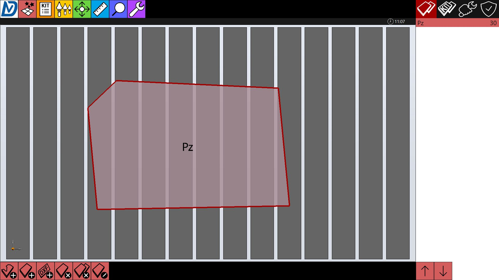
The top bar (green box), which remains fixed, contains buttons for accessing the various software sections: automatic programming management, process kit management, tool management, manual control, etc. The narrow black bar immediately below is reserved for messages.
Each software section is identified by a colour. The central area (yellow box), the right-hand bar (blue box) and the buttons at the bottom of the page (red box) change according to the selected section and assume its corresponding colour.
Chapter sections
To start the machine, stand in front of the electrical cabinet:
Turn the main switch to the “ON” position
Move the 0-1 selector to 1. When the NC and PC start-up cycle has finished, an LED inside the switch lights up
Once the LED on the 0-1 selector is lit, press the “Reset” button, which will turn green.

When the machine is switched on, the control system starts automatically and displays the page shown in the figure, allowing the operator to begin work.
Homing the machine
At start-up, the machine requires an axis-position check known as homing. To perform it, press the button shown in the figure.
 | Home machine |
The sequence moves the axes in the following order: Z, X and Y.
The machine moves to the zero position in the rear-left corner.
On completion, the indicators next to the axis names change from red to green.
 |  |
Open the purple “Options” section.
After pressing the “Machine shutdown” button, the following message appears: “Confirm the machine shutdown?”.
Press “OK” to start the machine shutdown cycle.
Press “Cancel” to return the program to the start page.
After confirming shutdown, wait until the monitor is completely black and then move the selector on the electrical cabinet door to 0.
The control panel contains the joysticks, potentiometers, function buttons and emergency stop button that provide immediate machine control. Other buttons with various functions, including cycle start and stop, are located at the top below the monitor.
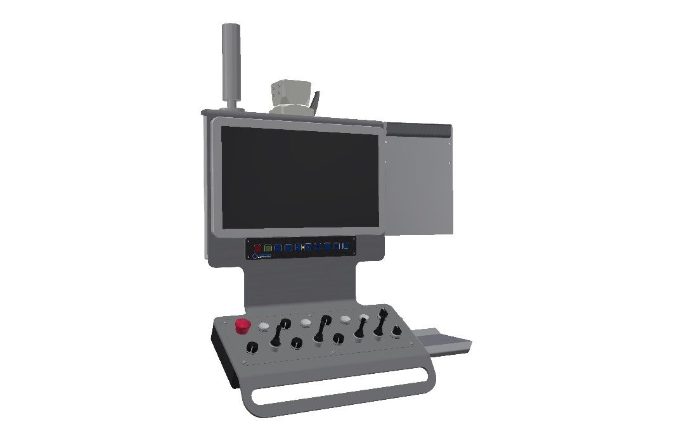
Manual movement is controlled using the joysticks on the control panel, while speed is adjusted using the corresponding potentiometers beside them.
 | CYCLE STOP If a polishing process is being performed (not loaded from ISO), pressing the Stop button causes the machine head to rise rapidly and automatically, moving the polishing plate to the material clearance position. |
CYCLE START | |
RESET | |
SLOW SPEED | |
Cross laser |
The machine is equipped with mechanical, electromechanical and software safety systems that intervene automatically in the event of a fault, reducing the risk.
For information on the safety devices, refer to Section A of the use and maintenance manual.
Emergency stop button
Located on the control panel immediately below the monitor, it must be used only in an emergency. Dedicated buttons described above are provided for stopping programs and movements.
Pressing the emergency stop button causes:
Immediate stopping of the axes
Stopping of the spindle
Disabling of various auxiliary controls, such as cooling water.
A fraction of a second after the button is pressed, power is removed from all the machine's electrical devices, placing it in a safe state.

When the emergency condition has ended, work can be resumed. To do so, release the emergency stop button by turning it slightly anticlockwise and re-enable the controls using the “Reset” button on the electrical cabinet door.
Front safety barriers
When the doors are open, as determined by the electrical status of the lock (yellow arrow), the machine operates in a restricted mode to comply with applicable safety regulations.

The following operations are disabled:
Spindle on/off
Coolant on/off
Start axis homing
Start any automatic movement
The following functions are enabled:
Tilting worktable up and down
Manual axis movement at limited speed
Programming the process parameters
Whenever safety mode is activated with the barriers open by pressing the button indicated by the red arrow, any programs currently running are stopped automatically and placed in “HOLD” mode until the safety condition is cleared. The “Cycle Start” button must then be pressed.
Interruption due to lack of water
The machine is equipped with a pressure switch that measures the incoming water pressure. It must be calibrated according to the amount of water required for the intended processes.
During automatic cycles, the pressure switch is activated to verify the actual presence of water pressure. If no pressure is detected, it automatically stops the current cycle and activates an error message. The operator must reset the error after ensuring that the pressure conditions allow the current process to continue. Processing can then be restarted directly from the point at which it stopped.
If a polishing process is being performed (not loaded from ISO), a lack-of-water error causes the machine head to rise rapidly and automatically, moving the polishing plate to the material clearance position.
Collision limit switch
The vertical Z movement is equipped with an anti-collision system that detects a possible vertical collision between the tool and the workpiece. Activation of this alarm stops all automatic and manual machine movements except upward vertical movement
To clear the collision, stop any automatic programs in progress and carefully move the Z axis upwards using the knob on the control panel.
Ampere threshold
The current drawn by the spindle, measured in amperes, is an important indicator of the condition of the machine and tool. This parameter enables real-time monitoring of the load placed on the spindle by the tool's operation.
It is important to enter an appropriate “Ampere threshold” value in the tool table. Processing is stopped if this value is exceeded.
If processing is interrupted due to the “Ampere threshold”, check the operating conditions to identify the cause. If conditions permit, simply press the “Start” button twice: the first press resets the alarm and the second restarts processing.
Axis travel check
The numerical control checks the target movement position point by point to ensure that the requested value is within the available axis travel.
A programming error that would command movement beyond the permitted limits is indicated by the message: “Axis …: position outside limit”.
The following is a list of alarms with possible causes and solutions.
Alarm/message description | Causes |
Direct jog active | Indicates that the axes have not yet been homed and no axis travel checks are being performed. Except in special circumstances, avoid all movement and home the axes. The same message is displayed when the machine is in the tool magazine area. |
Slow jog active and | Slow jog mode is activated using the corresponding button and is also indicated by the orange light remaining steadily lit. This mode limits the maximum speed of all axes to 2m/min. |
Start required to start or restart cycle | On the various work-cycle setup pages, when the Cycle Start button is pressed, the PLC checks that the spindle has started. If the check is successful, it informs the operator that the cycle can be started safely by pressing the Cycle Start button on the operator control panel again. |
Operator hold | “HOLD” mode. This mode is activated when an automatic cycle in progress is stopped by pressing the Cycle Stop button. If the button is pressed briefly, the message appears. Pressing the Cycle Start button resumes program execution from the point at which it stopped. If the Cycle Stop button is held for more than 5 seconds, the cycle is stopped completely. |
Waiting for spindle start | This message appears while waiting for the spindle to reach the speed set in the parameters. |
Water not started | If the water supply is interrupted, it may need to be restarted manually. |
Override at zero | Displayed when one of the speed adjustment potentiometers is set to zero. |
General emergency | The General emergency alarm message is activated when the red emergency stop button on the operator control panel is pressed. To reset the error, release the emergency stop button and re-enable the controls using the button on the electrical cabinet door. |
Controls not enabled | Displayed when the machine is switched on or after the emergency stop button has been pressed. It indicates that the control enable button on the electrical cabinet door must be pressed. |
Pump thermal overload and saw blade thermal overload active | The pump thermal overload alarm is triggered by incorrect operation of the oil pump while the tilting worktable is being raised or lowered (Optional). The saw blade thermal overload alarm is generated if the inverter controlling spindle rotation malfunctions. |
Collision limit switch active | The Collision limit switch active message means that the Z axis has moved down and triggered the anti-collision system. Check the machine conditions and carefully move the axis upwards |
Spindle overcurrent | Indicates that the “Ampere threshold” set for the tool has been exceeded. |
Electrical cabinet overtemperature alarm | A thermostat inside the electrical cabinet indicates that the set threshold has been exceeded. In the event of an alarm, check the actual temperature and operation of the electrical cabinet cooling system. |
Door open | See the previous section |
Drive power supply fault | The Drive power supply fault message indicates a failure or fault in the power supply inside the electrical cabinet. Shut down the machine completely and wait a few minutes before switching it on again. Contact the Service Department. |
Tilting worktable not in position (optional worktable) | To move the machine, the worktable must be fully lowered so that the limit switch beneath it provides the machine-enable signal and allows movement. |
Lubrication system fault or grease reservoir empty | Displayed when the grease distribution circuit is blocked and the grease cannot flow out. Check that at least the minimum required quantity of grease is present in the reservoir, then inspect the distribution path. The Grease reservoir empty alarm indicates that the reservoir must be refilled |
Insufficient spindle pressurisation | The pressure switch indicates insufficient air pressure at the spindle. Check the pressure available in the system, ensure there are no leaks along the air supply path and verify that the valve is activated. |
The application manages the machine configuration and programming of workpiece processes.
The following are some of the basic concepts used by the software:
TOOL | physically describes the tool by its length and diameter and stores certain essential properties required for its use |
PASS | a movement performed by the machine, identified by its type and certain parameters |
KIT | an ordered set of passes performed with a specific tool. Identified by a name, it also includes the required pressure during processing. |
MATERIAL | identified by a name, it represents an ordered set of kits. |
WORKPIECE | Work area with a specific thickness. |
The various software pages are described below, together with further details of the concepts listed above.
Chapter sections
The axis positions are shown at the top, the data for the tool installed on the machine are shown on the right, and the central area changes according to the button selected on the bar below.
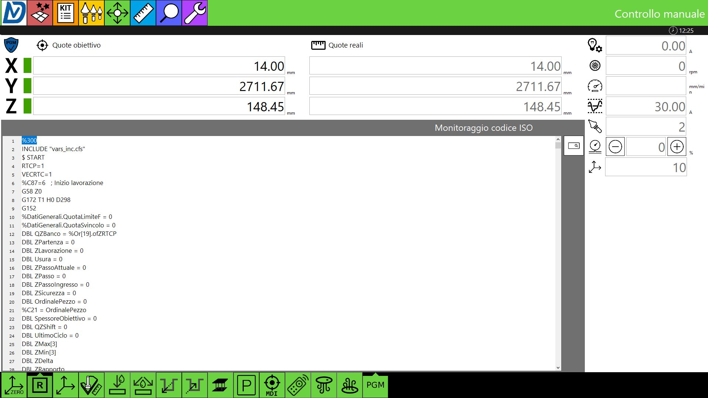
Buttons
 | Home axes |
Home individual axis | |
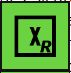 | Home X axis |
 | Home Y axis |
Home Z axis | |
 | Active origin |
 | Check probing results |
 | Internal water |
 | External water |
Machine over worktable | |
 | Machine clear of worktable |
Suction cup positioning | |
Parking | |
 | MDI – Move to position |
 | Remote movement |
Suction cup vacuum | |
Suction cup blow-off | |
External program actions | |
Load for execution | |
View code | |
 | Preview |
Selecting the active origin
The number of the active origin is shown in the right-hand column below the tool data.
To change the number, press the corresponding button in the centre of the page.

The Reset origin buttons can then be used to store different origins, bearing in mind that:
Origin 0 cannot be changed and refers to the machine zero point
Origin 19 is reserved for the worktable origin
Workpiece probing monitoring
The probing results can be viewed for either the individual probed point or the workpiece as a whole. Pressing the list on the right highlights the corresponding data.

The following are shown for each point:
X position
Y position
Measured thickness value
The following are shown for the workpiece:
Difference between the maximum and minimum measured thicknesses
Minimum measured thickness
ISO execution
Programs generated using CAD-CAM and external software can be loaded. These programs, with the “.pgm” extension, can be saved in computer folders or stored on a USB device and loaded as required.
The software provides a code view in which the lines of the loaded “.pgm” file can be read directly in the centre of the page.
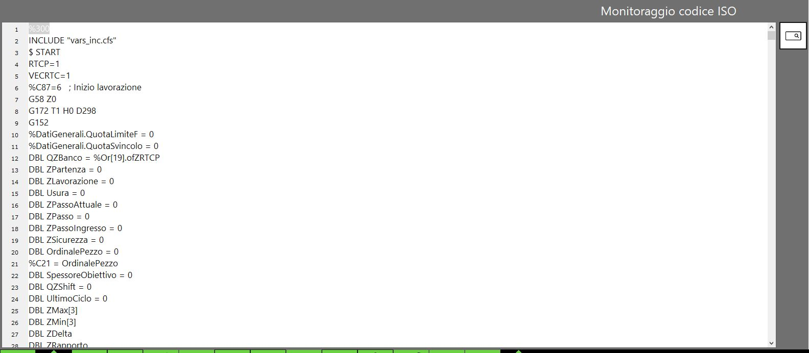
Alternatively, a graphical preview of the workpiece can be displayed. The controls on the right of this screen can be used to change the view.
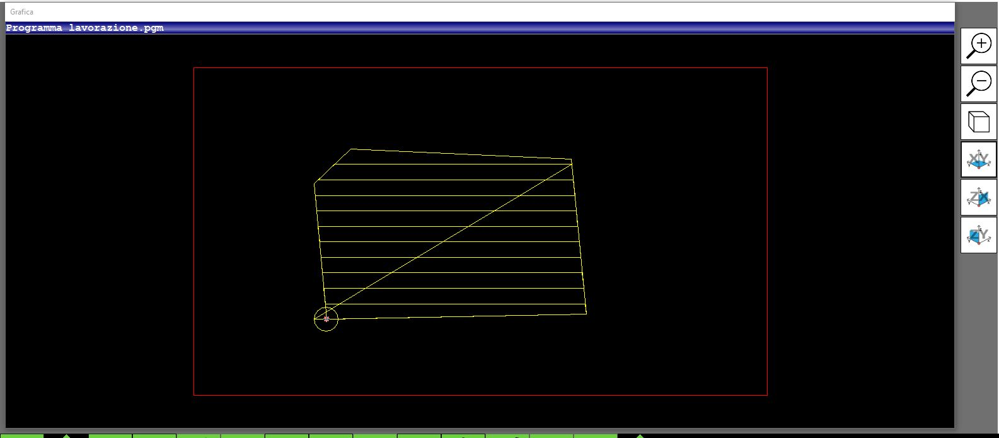
The active automatic mode indicator is located in the top-left corner of the manual page.
PGM | |
PGM |
Block search
When executing “.pgm” files, the block search function may be useful for repositioning the tool at the point where the machine stopped executing the program. The function can only be enabled if the program is loaded.
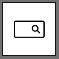 | Enable block search |
Disable block search | |
Go to line  |
Once the function has been enabled, the line from which processing is to continue/start can be found by selecting it directly in the editor or by entering its line number.
After selecting the point in the program from which to restart, press the “Cycle Start” button and wait a few seconds; the machine will recalculate all the lines of code in the “.pgm” file without performing any movement. The duration of this operation depends on the number of lines of code that must be checked without performing any movement.
Once recalculation is complete, the machine activates an automatic pause and requires the “Cycle Start” button to be pressed again to start processing.
This page is used to manage the physical magazine and the data for all tools.
A diagram of the tool rack is shown at the top, where the number of the tool stored in each position can be set.
The first box indicates the number of the tool installed on the machine spindle.

The software can manage up to 100 tools. Each tool is identified uniquely by a name and number. The tools are divided into two main categories: polishing and diamond tools
Polishing tool symbol | |
 | Diamond tool symbol |
Parameters
The tool characteristics are described below:
Name | an alphanumeric string used to identify the tool. |
Number | a unique integer that also identifies the tool on the numerical control. |
Type | diamond or polishing. |
Diameter | tool diameter. |
Length | Length measured from the spindle nose to the tool tip. |
Rotation | rotational speed expressed in revolutions per minute. Check the set value carefully to reduce risks. |
Water | indicates whether water will be activated when processing with this tool (internal or external water). |
Offset | the portion of the tool that may extend beyond the workpiece profile. If set to zero, the tool remains entirely within the profile. |
Wear | expressed in mm/metre processed, it is used to compensate for significant abrasive wear. |
Minimum length | the length below which processing generates an alarm to prevent damage to the material. |
Clearance position | the height used for rapid movements between workpieces and for approaching the workpiece before switching on the tool. |
Threshold | expressed in amperes, it indicates the spindle current limit above which the software protection is activated. |
The buttons for interacting with the machine are located at the bottom of the page.
 | Tool list |
 | Copy tool |
Probe tool | |
 | Change fitted tool |
 | Unload tool |
 | Open tool clamp |
 | Close tool clamp |
Tool list
The complete list of all tools is displayed on this page. When a tool is selected, its data can be viewed and edited on the right.

Copy tool
Allows data to be copied from one tool to another to speed up the creation of new tools.

Select the “source” tool whose data are to be copied on the left, select the “destination” tool to which the data are to be copied on the right, and then press the button below.
 | Duplicate tool |
The kit page is used to create, edit and delete kits and materials.
The kit page is divided into three columns:
The complete list of available kits is on the left
The general data for the selected kit are in the centre
The ordered list of passes to be performed with the selected kit is on the right

Categories
Kits are divided into two categories:
 | Polishing |
 | Calibrating |
Buttons
The two types have different properties and behaviours, which are described below. Clicking the icon changes the kit type.
Add kit | |
 | Remove kit |
 | Duplicate kit |
 | Material management |
Kit list
It is located on the left-hand side of the page. The same list also appears on other software pages, such as the material management or kit application pages.
The list can be scrolled using either the scroll bar or by moving the pointer within the list. The filter at the top displays only the kits matching the filter criterion.
 | Filter inactive |
 | Filter active |
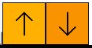 | Move kit position |
Kit parameters
Kits are divided into two types, which have different behaviours and parameters.
Some parameters are common to both:
Type | Calibrating or polishing |
Name | a unique name identifying the kit |
Tool | selected from the list of available tools, this is the tool used to perform the process |
Probing | indicates whether the tool length must be measured at the start of processing. |
Working speed | used for the movements selected through the passes |
Calibrating
Calibrating, which is performed with a diamond tool, is the material-removal operation required to level the material. If the thickness to be removed exceeds the capacity of the tool used, several passes at different depth increments are required to obtain the desired result.
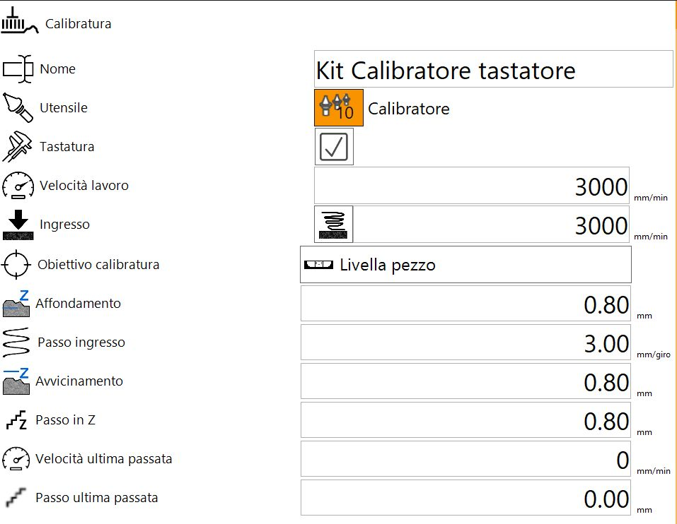
The characteristic calibrating parameters are:
Entry: allows the type and speed to be selected
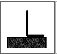 | Direct entry |
 | Spiral entry |
Calibrating target:
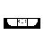 | Level workpiece |
 | Target thickness |
Parameters
Z approach | the position to which the tool moves before starting the entry movement. |
Z increment | the amount of material removed by the tool during processing. If the calibrating target is greater than the “Z increment”, several passes are performed until the desired thickness is reached. |
Final pass | if the increment and speed parameters are not zero, these are used to finish the workpiece. |
Polishing
Polishing, which is performed with a polishing tool, is the surface treatment operation that normally provides the final finish of the workpiece. Special tools with different grades of finish are used for this operation. The final result is the combined result of all the passes performed by each tool.
A fundamental feature of polishing is the ability to set the force applied to the tool as a percentage, where 0% corresponds to approximately 20Kg and 100% corresponds to approximately 220Kg.

The characteristic polishing parameters are:
Entry: allows the type and speed to be selected
 | Direct entry |
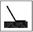 | Ramp entry |
Parameters
Pressure | expressed as a percentage, where 0% corresponds to approximately 20Kg and 100% corresponds to approximately 220Kg. |
Exit | allows the type and speed to be selected. |
 | Direct exit |
 | Ramp exit |
Pass order: indicates whether to use the set order or introduce variation by selecting passes randomly
Passes
These describe the movements performed by the tool over the workpiece area. A series of sequential passes, including passes of different types and with different parameters, can be added to each kit.
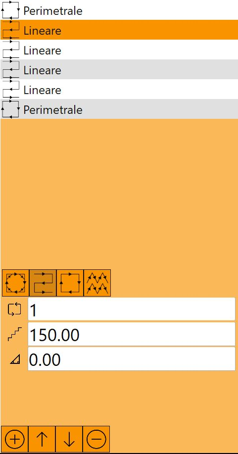
The type and associated parameters can be defined for each pass by selecting it in the list.
 | Pass type |
Insert new pass | |
Remove pass | |
 | Change list order |
Perimeter pass
Performs a complete pass around the workpiece perimeter the number of times specified by the parameter.
 |  |
|---|
 | Perimeter repetitions |
Linear pass
Performs parallel linear movements with the distance and direction set in the parameters
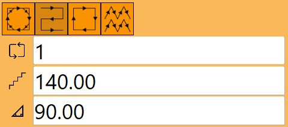 | 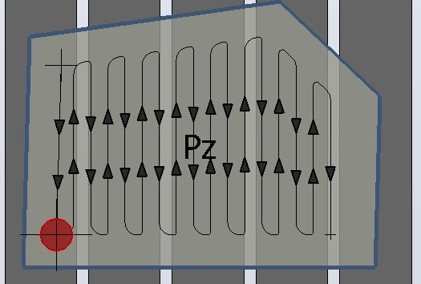 |
|---|
 | Process repetitions |
Distance | |
Direction |
Corner pass
Corners are the most difficult points to process because the tool passes over these areas less frequently. The corner pass performs repeated triangular movements at each vertex of the shape.
If the number of triangular passes is greater than 2, the path followed by the tool at the corner will not always be the same but will change automatically so that it does not repeatedly act on the same point.
 | 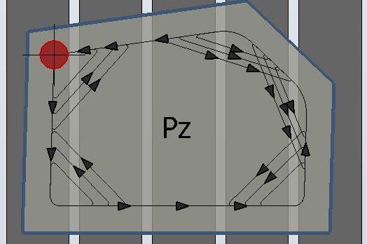 |
|---|
 | Number of repetitions |
Number of passes |
Zig-Zag pass
To provide variation, the tool performs a zig-zag movement following horizontal lines.
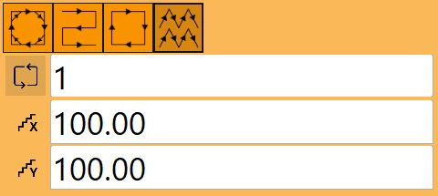 |  |
|---|
 | Number of repetitions |
 | Pitch |
 | Zig-Zag height |
Material
A material is an ordered set of kits. It helps the operator apply a sequence of kits to the workpiece.

The list of created materials is on the left. Each material is identified by a name, which appears at the top centre of the screen and can be edited as required.
Unlike the list on the “kit” page, the kit list includes a box displaying the kit's position number in the sequence. When a kit is selected, it changes position and is added to the bottom of the numbered list, receiving the last number.
To create a material:
Set the name
Press the empty square on the row of the kit to be inserted first.
Then select the other kits in the correct order.
A kit can be removed from the list by pressing its number again.
The only way to order the kits is to select them in the correct order.
 | Insert new material |
Remove material |
The processes performed by the machine are carried out on workpieces arranged on the worktable. After loading and securing the workpieces, their shapes must be defined so that the software can correctly calculate the paths required to complete processing.
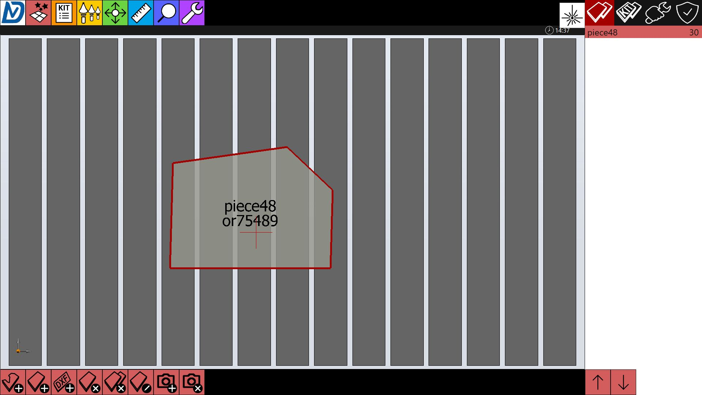
Create non-rectangular workpiece | |
 | Create rectangular workpiece |
Import DXF | |
Delete workpiece | |
 | Delete all workpieces |
Edit workpiece | |
 | Take photo |
 | Remove photo |
Creating a new workpiece
The workpiece is described by combining lines and arcs created in sequence.
The point is selected directly on the monitor, using either the touch point or the machine laser as a reference.
When the laser is on, a button appears at the top of the monitor and is described below.
 | A cross |
A green circle |
A workpiece is characterised by its Name, job and thickness, which can be edited on the right-hand side of the page.
The name and job will then be displayed inside the workpiece shape.

Line command active | |
 | Arc command active |
 | Undo |
Close perimeter | |
 | Measure thickness |
 | Close shape |
New rectangular workpiece
The workpiece data and rectangle dimensions can be set on the right.
Touching the monitor moves the rectangle to the selected point, using the bottom-left vertex (identified by a red circle) as the reference.
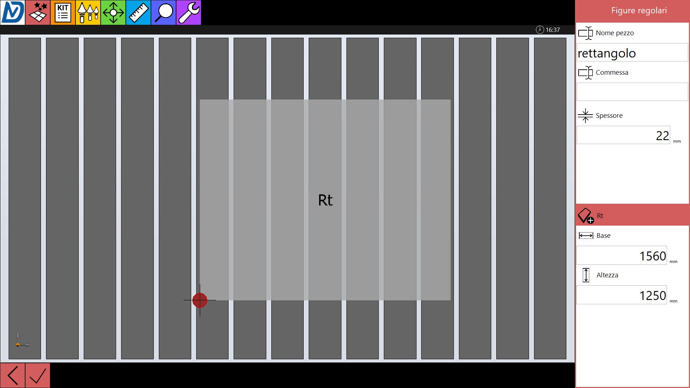
Edit workpiece
The shape, position, name and thickness of the workpiece can be edited at any time.
Data changes are applied when the window is closed.

When editing a workpiece, the vertices defining its perimeter can be selected and moved directly on the monitor by holding the point while moving it.
Pressing inside the workpiece moves the entire shape, while pressing outside the workpiece rotates it.
The controls below modify the entire shape
Align by rotation
| |
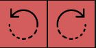 | Rotate workpiece clockwise or anticlockwise |
 | Move workpiece |
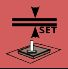 | Measure thickness |
Press the button at the top right to switch to the phase for applying processes to the workpiece. Changes are made to the selected workpiece, which can be selected either by pressing the shape in the centre of the monitor or its name in the list on the right.

In the list on the right, the workpiece view can be expanded by pressing the “_” button to display the kits applied to it. If no kit has been applied, the “!” symbol appears next to the workpiece name.
Buttons
 | Open kit list | ||
 | Open material list | ||
Remove kits | |||
 | Define probing points
| ||
 | Remove probing points | ||
Duplicate kits | |||
 | Create material |

Press the third button at the top right to switch to the phase in which the movements of the various tools over the workpiece can be checked.
The workpieces are distinguished by colour. The colour is shown both on the workpiece and next to the kit name, indicating the workpiece to which it refers.

Selecting the kit name displays all the passes in that kit superimposed on one another. Selecting an individual pass displays the path of that pass. Individual rows can be disabled and enabled by pressing the corresponding symbol on the right
Buttons
Tool outer-edge path | |
 | Tool centre path |
 | Set entry point |
 | Change entry-point position |
Press the fourth button at the top right to enter processing monitoring mode.
Press the button to start calculating the process. | |
Program running or waiting for start |
During processing, the tool is represented on the monitor by a green circle, while information about the current phase is shown at the top right.
The processing duration is shown in the top bar.
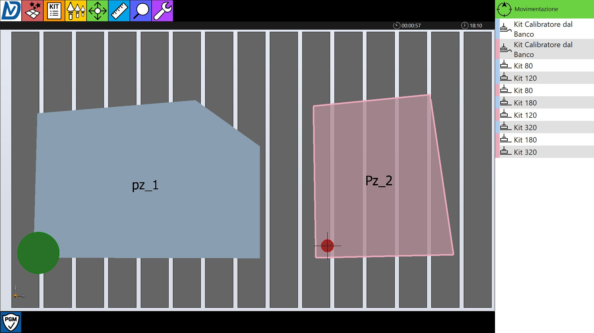
This page allows distances between points to be measured by pressing the monitor. As when creating a workpiece, the machine laser can be used to detect the required positions.
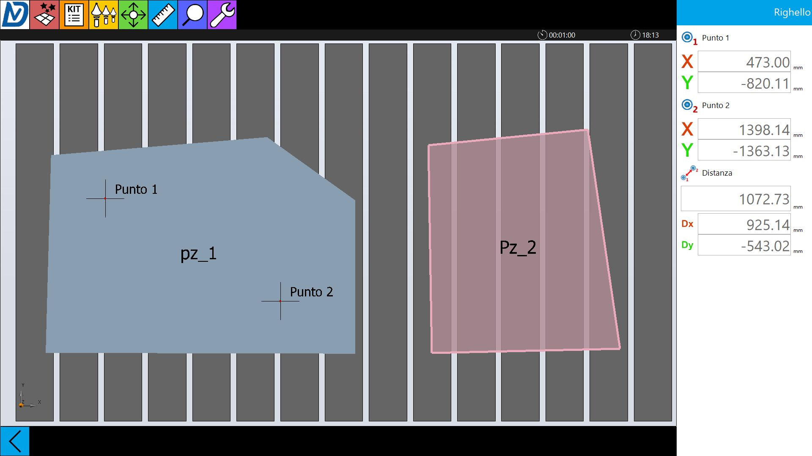
The point coordinates and the distance between them are shown on the right
Zoom mode provides access to several display controls.

In zoom mode, touching the monitor moves the view without modifying the workpieces.
Zoom in | |
Zoom out | |
 | Zoom all |
 | Zoom workpieces |
This page contains controls and data.
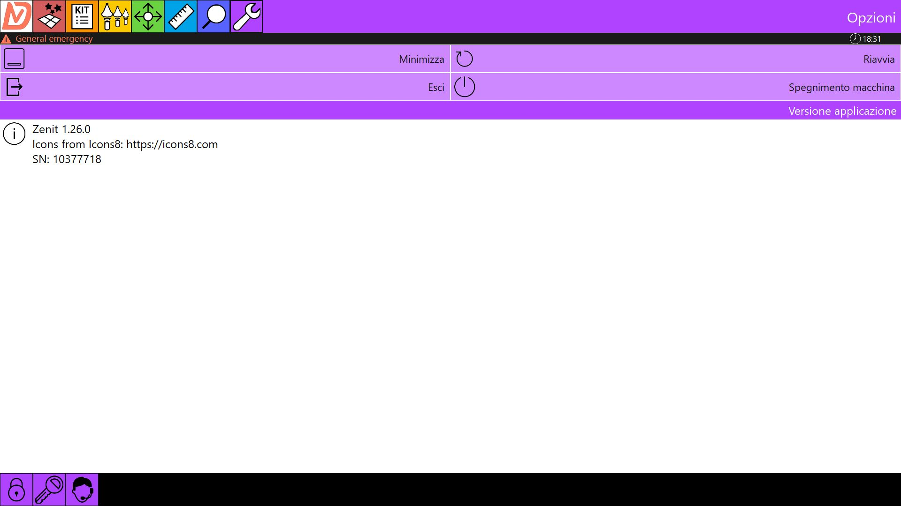
The data include the software version and the machine serial number (SN).
Minimise | |
 | Close application |
 | Restart application |
 | Shutdown |
Advanced parameters | |
 | Licence data |
 | Assistance |
This chapter covers several ancillary functions that are nevertheless important.
Alarms
When alarms or messages are present, the icon at the top left changes colour and the message appears in the black bar immediately below the icons.
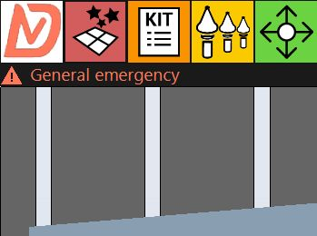
Pressing the Donatoni symbol opens a page showing all active messages and alarms that cannot otherwise be displayed on a single line.
Remote assistance
Donatoni Macchine S.r.l. provides a remote assistance service for performing software maintenance via an Internet connection to the machine.
To establish the connection, call the Donatoni Macchine S.r.l. Service Department and follow the specified procedure:
Open the settings page in the on-machine software.
Ensure that the machine has an Internet connection.
Press the Remote Assistance button and wait for the Donatoni Macchine S.r.l. Assistance program to start.
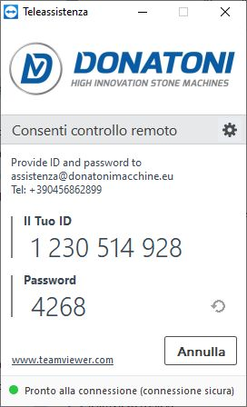
Provide the User ID and password to the connected technician and wait for instructions
From this point until the remote assistance session ends, the Donatoni Macchine S.r.l. technician is connected to the machine and controls it remotely.
Statistics
At the end of each process, the software saves summary process data in a .csv file.
A daily file named YYYYMMDD_data.csv is created, where
YYYY= year
MM= month
DD= day
The file is saved in C:\Zenit\Statistiche\ and contains the data shown below.
Workpiece name | Area (m^2) | Overall width (mm) | Overall height (mm) | Process completion date | Process duration | Processing length (m) |
Pz | 2.870063 | 2042 | 1417 | 30/11/2019 09:08 | 20:56.9 | 312.128 |
Pz | 2.870063 | 2042 | 1417 | 30/11/2019 10:54 | 21:00.4 | 312.218 |
Pz | 2.870063 | 2042 | 1417 | 30/11/2019 13:01 | 21:01.2 | 312.212 |
Each row corresponds to one workpiece, and the processing length is the sum of all the paths travelled by the tools involved.